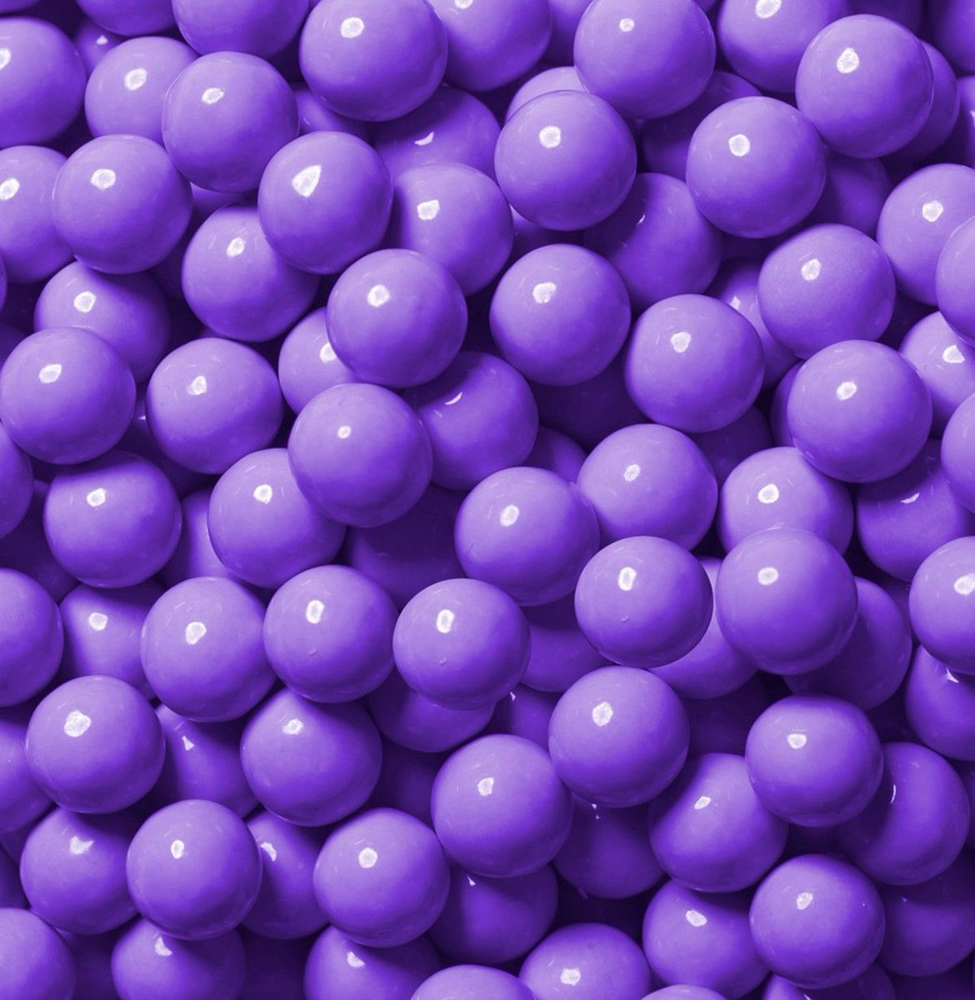

ФиолетовыйЦвет, соответствующий наиболее коротковолновому монохроматическому излучению, которое способен воспринимать человеческий глаз. |
|
Среди минералов фиолетовый оттенок имеет аметист. В цветках растений синий и фиолетовый цвета часто обусловлены наличием специфических веществ — антоцианов. Название цвета французского происхождения, произошло от цветка фиалки. В старину тот же цвет (бледный оттенок тёмно-фиолетового) чаще обозначался словом лиловый (от французского слова, обозначающего сирень). Фиолетовый цвет является одним из семи цветов радуги. По легенде, первую фиолетовую краску — пурпур — открыли финикийцы. Этот краситель, добываемый из трёх видов морских улиток, чрезвычайно высоко ценился в античности, ибо напоминает пламя. Тирский пурпур был буквально на вес золота. В средневековой Европе, когда умирал монарх или кто-либо из членов его семьи, придворные в знак траура надевали одежду фиолетового (пурпурного) цвета. Фиолетовый цвет считался цветом адвента и использовался в одежде священников западного обряда и в свечах. В инкской узелковой письменности кипу фиолетовый (тёмно-лиловый) цвет обозначал начальника, который бы правил над селением, территорией, людьми. |